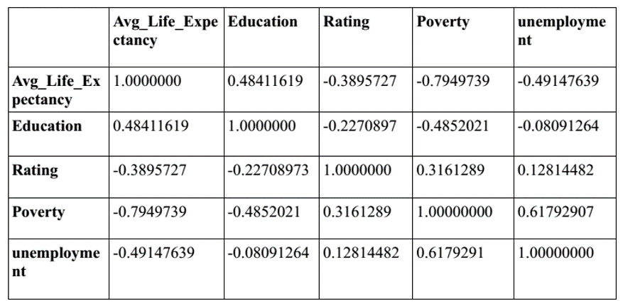
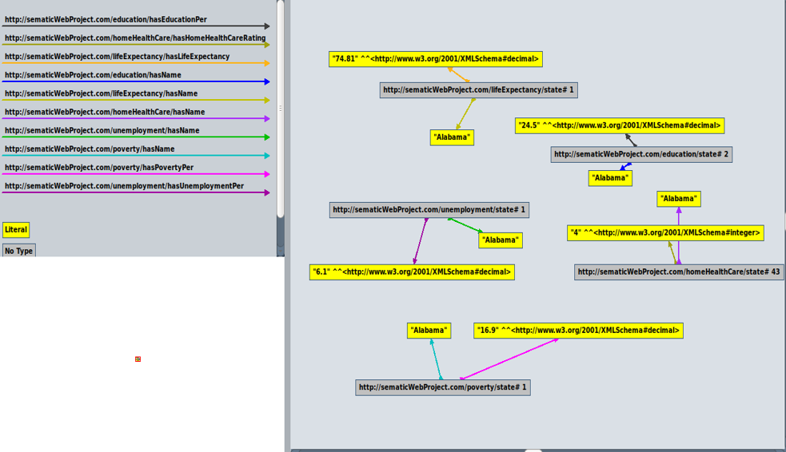

Pre-Processing
We have used R studio to do all the pre processing.
After the initial preprocessing, which removes all the irrelevant columns and empty values in the dataset, we check all the pair wise correlations of all the data.
We also filtered out "District of Columbia" while querying since it is not a state.
We then select the attributes that are of interest.
Correlation Matrix
Computed using R Studio:

Data Conversion
All the preprocessed datasets are in csv format and is converted into turtle format using a custom java program.
The turtle files are then converted into rdf files using this online tool.
We also filtered out "District of Columbia" while querying since it is not a state.
We then select the attributes that are of interest.
Semantic Strucutre of Data
This is how an instance of each of the dataset looks like in Gruff:

Data Federation
Created a custom SPARQL Endpoint using Apache Fuseki.
Fuseki server is running on our local machine and a dataset by the name of "semanticWebProject" is created. The 5 rdf dataset files are then uploaded into this custom sparql endpoint and is ready to be queried
Sample Queries:
1. For getting all values for each state:
PREFIX edu:http://sematicWebProject.com/education/
PREFIX hhc:http://sematicWebProject.com/homeHealthCare/
PREFIX le:http://sematicWebProject.com/lifeExpectancy/
PREFIX pov:http://sematicWebProject.com/poverty/
PREFIX une:http://sematicWebProject.com/unemployment/
SELECT ?stateName ?educationPer ?hhcRating ?lifeExpectancy ?povertyPer ?unempPer
WHERE {
?iri1 edu:hasName ?stateName .
?iri1 edu:hasEducationPer ?educationPer .
?iri2 hhc:hasName ?stateName .
?iri2 hhc:hasHomeHealthCareRating ?hhcRating .
?iri3 le:hasName ?stateName .
?iri3 le:hasLifeExpectancy ?lifeExpectancy .
?iri4 pov:hasName ?stateName .
?iri4 pov:hasPovertyPer ?povertyPer .
?iri5 une:hasName ?stateName .
?iri5 une:hasUnemploymentPer ?unempPer .
FILTER NOT EXISTS {?iri1 ?y "District of Columbia" }}
2. For Getting Min (Value & State), Avg, Max (Value & State) for life expectency:
PREFIX edu:http://sematicWebProject.com/education/
PREFIX hhc:http://sematicWebProject.com/homeHealthCare/
PREFIX le:http://sematicWebProject.com/lifeExpectancy/
PREFIX pov:http://sematicWebProject.com/poverty/
PREFIX une:http://sematicWebProject.com/unemployment/
SELECT ?minState ?min ?maxState ?max ?avg
WHERE {
?x le:hasLifeExpectancy ?min .
?x le:hasName ?minState .
?y le:hasLifeExpectancy ?max .
?y le:hasName ?maxState .
{SELECT (MIN(?lifeExpectancy) AS ?min) (AVG(?lifeExpectancy) AS ?avg) (MAX(?lifeExpectancy) AS ?max)
WHERE{
?iri1 edu:hasName ?stateName .
?iri2 hhc:hasName ?stateName .
?iri3 le:hasName ?stateName .
?iri3 le:hasLifeExpectancy ?lifeExpectancy .
?iri4 pov:hasName ?stateName .
?iri5 une:hasName ?stateName .
FILTER NOT EXISTS {?iri1 ?y "District of Columbia" }
}